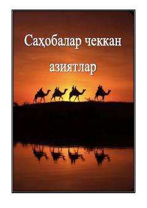

SCSahobalarning Islom yo'lida ko'rsatgan matonati va chekkan azoblari haqidagi tarixiy asar.
Ushbu asar ilk musulmonlarning, xususan Abu Bakr Siddiq roziyallohu anhuning Islom yo'lida chekkan mashaqqatlari va qiyinchiliklari haqida hikoya qiladi. Kitobda sahobalarning iymon yo'lidagi matonati, Payg'ambarimiz sollallohu alayhi vasallamga bo'lgan muhabbati va o'sha davrning ijtimoiy muhiti tahlil qilinadi.